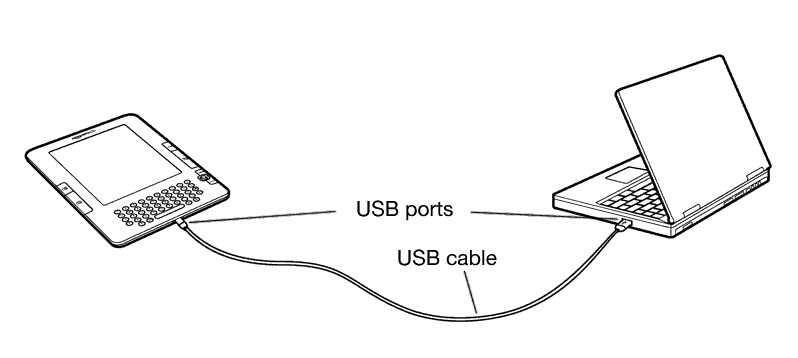

You can download and read text-based content on your Kindle without using your computer. However, if you want to access audiobooks or MP3 files, you need to transfer them by connecting Kindle to your computer over USB. In addition, there are other tasks you can accomplish using your computer as described in this chapter.
This section lists the requirements for connecting Kindle to your computer. The USB cable you use with your power adapter can also be used to connect your Kindle to a computer, so there is nothing additional to buy.
Both Macintosh and Windows users can manage Kindle files through the USB connection. When your Kindle is plugged into your computer, your Kindle will appear as a removable mass storage device. If your computer is Windows-based, you need to be using Windows 2000 or later. If your computer is a Macintosh, you should be using Mac OS X 10.2 or later. With either computer, you must have an available USB port or an attached USB hub with an available port.
To connect Kindle to your computer, follow these steps:
The illustration below shows a Kindle and a laptop computer connected through the USB cable.

When you are connected to your PC, your Kindle will go into USB drive mode and its battery will be recharged by the computer. Your Whispernet service is temporarily shut off and you will not receive any of your subscriptions while in this mode. Also, your Kindle is not usable as a reading device while you are in USB drive mode, but will return right to where you were when you unmount the device from your computer.
 Tip: If you'd like to continue reading your Kindle while its battery is being charged by the computer, you will need to release it from USB drive mode by unmounting or ejecting the Kindle from the computer. Note that it is always best to use your computer to unmount or eject your Kindle before disconnecting the USB cable. Consult your computer manual for details on how to properly disconnect a USB storage device.
Tip: If you'd like to continue reading your Kindle while its battery is being charged by the computer, you will need to release it from USB drive mode by unmounting or ejecting the Kindle from the computer. Note that it is always best to use your computer to unmount or eject your Kindle before disconnecting the USB cable. Consult your computer manual for details on how to properly disconnect a USB storage device.
When your Kindle is connected to a computer and mounted as a USB drive, you will see three default directories or folders. The one called "documents" contains all of your digital reading materials like books, newspapers, your My Clippings file, etc. The "Audible" directory is for your audiobooks, and "music" is for your MP3 files. You can add Kindle-compatible files to these directories, and you can copy, move, or delete the files that are already there. The computer file formats that you can read or listen to on your Kindle are listed below:
 Tip: Mobipocket files must have no Digital Rights Management (DRM) protection applied to be readable on your Kindle. If you purchased a Mobipocket file from a Mobipocket retailer, you will not be able to open the file on your Kindle.
Tip: Mobipocket files must have no Digital Rights Management (DRM) protection applied to be readable on your Kindle. If you purchased a Mobipocket file from a Mobipocket retailer, you will not be able to open the file on your Kindle.
Your clippings are stored in a file called "My Clippings.txt," which is located in the "documents" directory. If you want to copy the clippings from your Kindle to your computer so you can edit them, e-mail a passage to a friend, or just archive your clippings, you can drag and drop the "My Clippings.txt" file onto your computer. Clippings and other annotations are described in more detail in Chapter 3.
In addition to reading commercially available materials, you can have Amazon convert your personal documents into a Kindle-compatible format for reading on your Kindle. You can have the converted files sent wirelessly to your Kindle for a small fee or to the e-mail address associated with your Amazon account for free.
In addition to the file formats listed above, you can also convert other personal documents to read on your Kindle. The supported file formats are listed below:
Note: PDF conversion is currently an experimental feature on Kindle. Due to PDF's fixed layout format, some complex PDF files might not format correctly on your Kindle.
 Tip: ZIP files are automatically opened up by the conversion service if you choose to compress your documents. Any enclosed files listed above inside the ZIP file will be converted and sent to your Kindle or computer as specified.
Tip: ZIP files are automatically opened up by the conversion service if you choose to compress your documents. Any enclosed files listed above inside the ZIP file will be converted and sent to your Kindle or computer as specified.
Each Kindle has its own unique e-mail address. When you e-mail personal documents to your Kindle, they are automatically converted to a Kindle-friendly format. To set up your Kindle e-mail address, follow the steps below:
Your Kindle will only receive converted files from e-mail addresses you have authorized on the Manage Your Kindle page to help prevent spam. The default setting dictates that only items sent from your Amazon.com account e-mail address will be forwarded. You can add e-mail addresses to the list by visiting http://www.amazon.com/manageyourkindle
In Manage Your Kindle, add the addresses of your friends, co-workers, or anyone else you would like to enable to send you files:
Once you have set up the e-mail addresses, you can send and convert your personal documents by following the steps below:
 Tip: If you would like to avoid the fee, address the e-mail so that the second part of your Kindle e-mail address is @free.kindle.com. After sending to the @free.kindle.com address, a link to the converted file will be e-mailed to your Amazon.com e-mail address. You can then download the file to your Kindle's documents folder via USB using your computer.
Tip: If you would like to avoid the fee, address the e-mail so that the second part of your Kindle e-mail address is @free.kindle.com. After sending to the @free.kindle.com address, a link to the converted file will be e-mailed to your Amazon.com e-mail address. You can then download the file to your Kindle's documents folder via USB using your computer.
The conversion service on Your Kindle is meant for the receipt of personal, non-commercial documents only. You may not authorize the sending of documents from automated distribution services.
You can purchase, transfer, and play audiobooks from Audible.com as well as transfer MP3 files to Kindle to play as background audio while you read.
Kindle supports the thousands of audiobooks available through Audible.com. You can purchase and download one or more of these books from Audible.com through your Windows or Mac-based computer and then transfer these books over USB to your Kindle's "Audible" folder, and listen to them on your Kindle. Once on your Kindle, an Audible file will be displayed on your Home screen with your other documents. The file will have the word "audio" next to the title to indicate that it is an audiobook.
Audible offers five versions of its audiobook format. Kindle is compatible with formats 4 and Audible Enhanced (AAX). Formats 1, 2, 3 and audiobooks provided from other sources are not supported.
The first time you play an Audible audiobook, you will be prompted to register your Kindle with Audible. Make sure you register with your Audible account name and password, not your Amazon account credentials.
To transfer audiobooks to your Kindle, follow these steps:
 Tip: To pause the playing of Audible, press the space bar on the keyboard and press the spacebar again to resume.
Tip: To pause the playing of Audible, press the space bar on the keyboard and press the spacebar again to resume.
You can transfer your MP3 files to Kindle by copying them to the "music" folder on your Kindle over USB. For more information on connecting your computer over USB, see Making the Connection earlier in this chapter.
Kindle only supports MP3 audio files; AAC, WAV and other music file formats are not supported.
To transfer MP3s to your Kindle, follow these steps:
For more information on playing background music, see Chapter 3.
 Tip: While there is no limit to the number of MP3 files and audiobooks that you can transfer to your Kindle, keep in mind that these files are larger, and space may become a consideration.
Tip: While there is no limit to the number of MP3 files and audiobooks that you can transfer to your Kindle, keep in mind that these files are larger, and space may become a consideration.